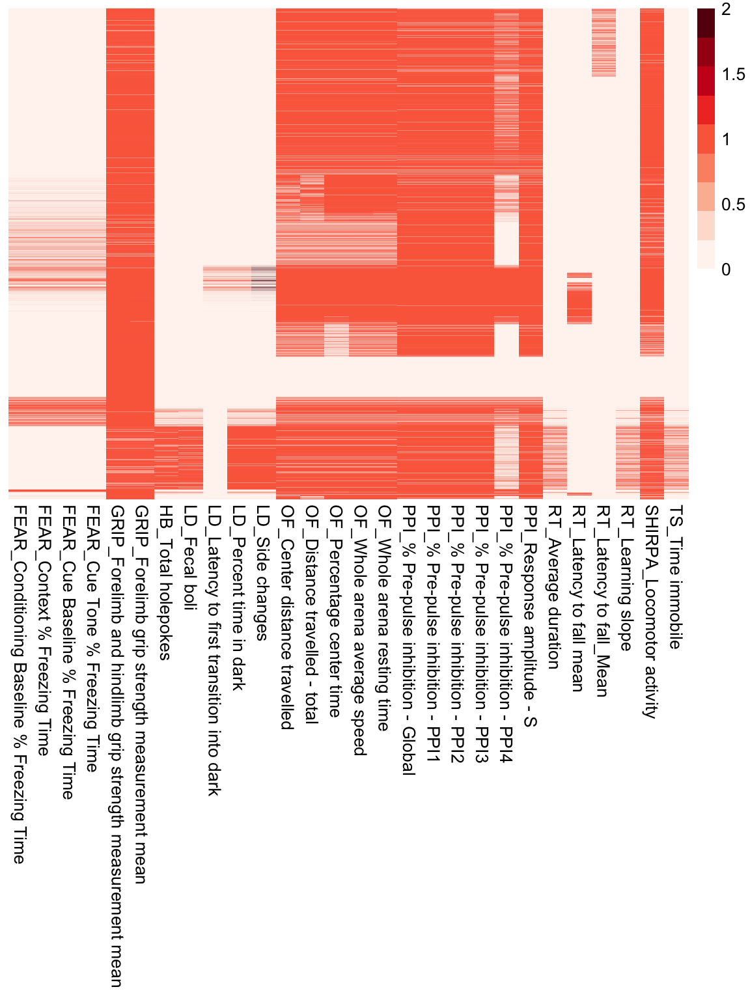
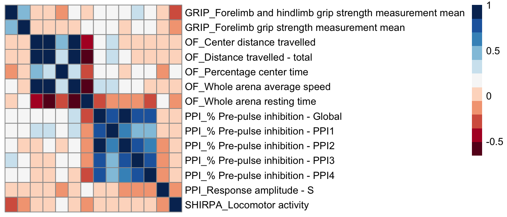

Last updated: 2020-03-26
Checks: 7 0
Knit directory: Bin_Project/
This reproducible R Markdown analysis was created with workflowr (version 1.4.0). The Checks tab describes the reproducibility checks that were applied when the results were created. The Past versions tab lists the development history.
Great! Since the R Markdown file has been committed to the Git repository, you know the exact version of the code that produced these results.
Great job! The global environment was empty. Objects defined in the global environment can affect the analysis in your R Markdown file in unknown ways. For reproduciblity it’s best to always run the code in an empty environment.
The command set.seed(20200325) was run prior to running the code in the R Markdown file. Setting a seed ensures that any results that rely on randomness, e.g. subsampling or permutations, are reproducible.
Great job! Recording the operating system, R version, and package versions is critical for reproducibility.
Nice! There were no cached chunks for this analysis, so you can be confident that you successfully produced the results during this run.
Great job! Using relative paths to the files within your workflowr project makes it easier to run your code on other machines.
Great! You are using Git for version control. Tracking code development and connecting the code version to the results is critical for reproducibility. The version displayed above was the version of the Git repository at the time these results were generated.
Note that you need to be careful to ensure that all relevant files for the analysis have been committed to Git prior to generating the results (you can use wflow_publish or wflow_git_commit). workflowr only checks the R Markdown file, but you know if there are other scripts or data files that it depends on. Below is the status of the Git repository when the results were generated:
Ignored files:
Ignored: .Rproj.user/
Untracked files:
Untracked: analysis/eda_don.Rmd
Untracked: docs/figure/cor_pheno.Rmd/
Unstaged changes:
Modified: analysis/index.Rmd
Note that any generated files, e.g. HTML, png, CSS, etc., are not included in this status report because it is ok for generated content to have uncommitted changes.
These are the previous versions of the R Markdown and HTML files. If you’ve configured a remote Git repository (see ?wflow_git_remote), click on the hyperlinks in the table below to view them.
| File | Version | Author | Date | Message |
|---|---|---|---|---|
| Rmd | 36f89de | dleelab | 2020-03-27 | c |
| Rmd | 1f345a9 | dleelab | 2020-03-27 | size |
| Rmd | b80d487 | dleelab | 2020-03-27 | c |
rm(list=ls())
#library(data.table)
#library(reshape2)
#library(ggplot2)
library(dplyr)
Attaching package: 'dplyr'The following objects are masked from 'package:stats':
filter, lagThe following objects are masked from 'package:base':
intersect, setdiff, setequal, unionlibrary(tidyr)
library(pheatmap)
library(RColorBrewer)pheno.file = "~/Box Sync/Miami_IMPC/data/v10.1/AllBehaviourControls.Rdata"
load(file=pheno.file)
pheno = df %>% filter(data_type!="TEXT") %>%
mutate(proc_short_name=recode(procedure_name, "Acoustic Startle and Pre-pulse Inhibition (PPI)"="PPI",
"Combined SHIRPA and Dysmorphology"="SHIRPA",
"Fear Conditioning"="FEAR",
"Grip Strength"="GRIP",
"Hole-board Exploration"="HB",
"Light-Dark Test"="LD",
"Open Field"="OF",
"Rotarod"="RT",
"Tail Suspension"="TS")) %>%
mutate(proc_param_name=paste0(proc_short_name,"_",parameter_name))
dim(pheno)[1] 357765 76This heatmaps show phenotypes measured for each control mouse. Rows represent mice and columns represents phenotypes.
mtest <- table(pheno$biological_sample_id, pheno$proc_param_name)
mtest <-as.data.frame.matrix(mtest)
pheatmap(mtest, cluster_rows = F, cluster_cols=F, show_rownames=F, color=brewer.pal(n=9,name="Reds")) SHIRPA, PPI, OF and GRIP phenotypes are measured for most of control mice. So we compute correlations of these phenotypes.
pheno.sub <- pheno %>% filter(proc_short_name=="SHIRPA"|
proc_short_name=="PPI"|
proc_short_name=="OF"|
proc_short_name=="GRIP")
dim(pheno.sub)[1] 323604 76pheno.mat <- pheno.sub %>%
select(biological_sample_id, proc_param_name, data_point) %>%
spread(proc_param_name, data_point) %>%
tibble::column_to_rownames(var="biological_sample_id")
dim(pheno.mat)[1] 30419 14pheno.cor <- cor(pheno.mat, use="pairwise.complete.obs")
pheatmap(pheno.cor, cluster_rows = F, cluster_cols=F, show_colnames=F, col=brewer.pal(n=11,name="RdBu"))
## number of domains
length(unique(pheno$procedure_name))[1] 9unique(pheno$procedure_name)[1] "Acoustic Startle and Pre-pulse Inhibition (PPI)"
[2] "Grip Strength"
[3] "Open Field"
[4] "Combined SHIRPA and Dysmorphology"
[5] "Fear Conditioning"
[6] "Light-Dark Test"
[7] "Rotarod"
[8] "Hole-board Exploration"
[9] "Tail Suspension" table(pheno$procedure_name)
Acoustic Startle and Pre-pulse Inhibition (PPI)
134822
Combined SHIRPA and Dysmorphology
23444
Fear Conditioning
10144
Grip Strength
56222
Hole-board Exploration
3361
Light-Dark Test
12448
Open Field
109116
Rotarod
6870
Tail Suspension
1338 ## number of phenotypes in each domain
pheno %>% group_by(procedure_name) %>% summarise(num.pheno=length(unique(parameter_name)))# A tibble: 9 x 2
procedure_name num.pheno
<chr> <int>
1 Acoustic Startle and Pre-pulse Inhibition (PPI) 6
2 Combined SHIRPA and Dysmorphology 1
3 Fear Conditioning 4
4 Grip Strength 2
5 Hole-board Exploration 1
6 Light-Dark Test 4
7 Open Field 5
8 Rotarod 4
9 Tail Suspension 1## number of observations in each domain & phenotype
pheno %>% group_by(procedure_name, parameter_name) %>% summarise(num.obs=length(parameter_name))# A tibble: 28 x 3
# Groups: procedure_name [9]
procedure_name parameter_name num.obs
<chr> <chr> <int>
1 Acoustic Startle and Pre-pulse Inh… % Pre-pulse inhibition - Gl… 24440
2 Acoustic Startle and Pre-pulse Inh… % Pre-pulse inhibition - PP… 24440
3 Acoustic Startle and Pre-pulse Inh… % Pre-pulse inhibition - PP… 24440
4 Acoustic Startle and Pre-pulse Inh… % Pre-pulse inhibition - PP… 24440
5 Acoustic Startle and Pre-pulse Inh… % Pre-pulse inhibition - PP… 12610
6 Acoustic Startle and Pre-pulse Inh… Response amplitude - S 24452
7 Combined SHIRPA and Dysmorphology Locomotor activity 23444
8 Fear Conditioning Conditioning Baseline % Fre… 2536
9 Fear Conditioning Context % Freezing Time 2536
10 Fear Conditioning Cue Baseline % Freezing Time 2536
# … with 18 more rowstable(pheno$biological_model_id, pheno$strain_name)
B6Brd;B6Dnk;B6N-Tyr<c-Brd> C57BL/6N C57BL/6NCrl C57BL/6NJ
39064 0 0 0 0
40139 0 0 0 0
40140 0 0 90790 0
41648 0 0 0 0
41959 0 82810 0 0
46056 366 0 0 0
47815 0 0 0 64981
C57BL/6NJcl C57BL/6NTac
39064 0 3
40139 0 111307
40140 0 0
41648 7508 0
41959 0 0
46056 0 0
47815 0 0table(pheno$zygosity)
homozygote
357765 table(pheno$sex)
female male
178504 179261 table(pheno$production_center)
BCM CCP-IMG HMGU ICS JAX KMPC
20765 20451 43037 36066 64981 10538
MARC MRC Harwell RBRC TCP UC Davis WTSI
19917 63096 19679 19106 33701 6428 table(pheno$procedure_name, pheno$production_center)
BCM CCP-IMG HMGU
Acoustic Startle and Pre-pulse Inhibition (PPI) 9895 6756 16734
Combined SHIRPA and Dysmorphology 1265 1132 3124
Fear Conditioning 0 4568 0
Grip Strength 4292 2290 5843
Hole-board Exploration 0 0 0
Light-Dark Test 0 0 0
Open Field 5313 5705 15713
Rotarod 0 0 1623
Tail Suspension 0 0 0
ICS JAX KMPC MARC
Acoustic Startle and Pre-pulse Inhibition (PPI) 14394 19067 4650 7480
Combined SHIRPA and Dysmorphology 2334 3151 806 1398
Fear Conditioning 0 0 364 0
Grip Strength 4840 6696 1606 3380
Hole-board Exploration 0 3361 0 0
Light-Dark Test 0 11124 0 0
Open Field 12085 17410 3112 7659
Rotarod 2413 2834 0 0
Tail Suspension 0 1338 0 0
MRC Harwell RBRC TCP
Acoustic Startle and Pre-pulse Inhibition (PPI) 25739 7944 6618
Combined SHIRPA and Dysmorphology 4963 1680 1108
Fear Conditioning 0 0 2396
Grip Strength 9789 3370 2190
Hole-board Exploration 0 0 0
Light-Dark Test 0 0 1324
Open Field 22605 6685 5470
Rotarod 0 0 0
Tail Suspension 0 0 0
UC Davis WTSI
Acoustic Startle and Pre-pulse Inhibition (PPI) 15545 0
Combined SHIRPA and Dysmorphology 2483 0
Fear Conditioning 2816 0
Grip Strength 5498 6428
Hole-board Exploration 0 0
Light-Dark Test 0 0
Open Field 7359 0
Rotarod 0 0
Tail Suspension 0 0
sessionInfo()R version 3.6.1 (2019-07-05)
Platform: x86_64-apple-darwin15.6.0 (64-bit)
Running under: macOS Mojave 10.14.6
Matrix products: default
BLAS: /Library/Frameworks/R.framework/Versions/3.6/Resources/lib/libRblas.0.dylib
LAPACK: /Library/Frameworks/R.framework/Versions/3.6/Resources/lib/libRlapack.dylib
locale:
[1] en_US.UTF-8/en_US.UTF-8/en_US.UTF-8/C/en_US.UTF-8/en_US.UTF-8
attached base packages:
[1] stats graphics grDevices utils datasets methods base
other attached packages:
[1] RColorBrewer_1.1-2 pheatmap_1.0.12 tidyr_1.0.0
[4] dplyr_0.8.3
loaded via a namespace (and not attached):
[1] Rcpp_1.0.2 pillar_1.4.2 compiler_3.6.1 git2r_0.26.1
[5] workflowr_1.4.0 tools_3.6.1 zeallot_0.1.0 digest_0.6.20
[9] evaluate_0.14 tibble_2.1.3 lifecycle_0.1.0 gtable_0.3.0
[13] pkgconfig_2.0.2 rlang_0.4.5 cli_1.1.0 yaml_2.2.0
[17] xfun_0.9 stringr_1.4.0 knitr_1.24 fs_1.3.1
[21] vctrs_0.2.0 rprojroot_1.3-2 grid_3.6.1 tidyselect_0.2.5
[25] glue_1.3.1 R6_2.4.0 fansi_0.4.0 rmarkdown_1.15
[29] purrr_0.3.3 magrittr_1.5 whisker_0.3-2 backports_1.1.4
[33] scales_1.0.0 htmltools_0.3.6 assertthat_0.2.1 colorspace_1.4-1
[37] utf8_1.1.4 stringi_1.4.3 munsell_0.5.0 crayon_1.3.4